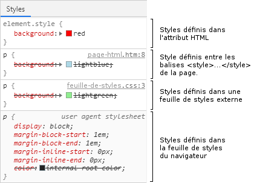

Les règles de priorité en CSS (tutoriel)
Les règles contradictoires.
Il arrive fréquemment que plusieurs règles CSS soient contradictoires. Cela se produit chaque fois que l'on tente d'affecter des valeurs différentes à une même propriété.
Par exemple, les deux règles CSS suivantes se contredisent sur le premier paragraphe.
En effet, la première règle demande que l'élément dont l'identifiant est parag1
soit en rouge, tandis que la deuxième règle demande que les paragraphes soient en bleu.
L'élément parag1 étant lui-même un paragraphe, il y a contradiction.
#parag1 {color:red;}
p {color:blue;}
Voici comment s'affichera le code présenté ci-dessus. On voit que ce n'est pas nécessairement
la dernière règle rencontrée qui écrase les précédentes.
Dans cet exemple on voit que le sélecteur par identifiant ( # ) est prioritaire sur
un sélecteur par type d'élément ( p ).
Le premier paragraphe.
Le deuxième paragraphe.
La valeur !important.
Le mot !important peut être ajouté à n'importe quelle valeur dans une règle CSS.
Il rend la règle prioritaire.
L'exemple ci-dessous est identique au premier sauf que !important figure dans
la deuxième règle. On voit que la priorité des règles a été changée.
Cliquez sur l'exemple pour afficher le code CSS.
Le premier paragraphe.
Le deuxième paragraphe.
Remarque : la mention !important est à utiliser le moins possible.
Les priorités des sélecteurs.
Rappel : le sélecteur est ce qui détermine sur quel(s) élément(s) une règle CSS s'applique.
Dans l'exemple ci-dessous, le sélecteur est .encart. Il désigne tous les éléments
comportant l'attribut class="encart".
.encart {border:solid 1px silver;}
Tous les sélecteurs n'ont pas la même priorité. En cas de contradiction entre deux règles,
celle qui s'applique est celle qui a le sélecteur le plus prioritaire.
De façon générale, les sélecteurs ont une priorité d'autant plus grande qu'ils sont plus précis.
Le sélecteur très général * a une priorité de 0.
A l'inverse, un sélecteur sur un identifiant , qui en principe ne concerne qu'un seul
élément de la page, à une priorité de 100.
Pour déterminer la priorité d'un sélecteur, il faut considérer la logique suivante :
- Une règle avec la mention
!importanta une priorité de 10000. - Une règle écrite dans l'attribut
styled'une balise HTML a une priorité de 1000. - Une règle avec un sélecteur sur un identifiant (
#) a une priorité de 100. - Une règle avec un sélecteur sur une classe ( . ) ou des
pseudo-class( : ) a une priorité de 10. - Une règle avec un sélecteur sur un type d'élément ( p ) ou des
pseudo-elements( :: ) a une priorité de 1. - Le sélecteur étoile (
*) a une priorité de 0.
Lorsqu'un sélecteur comporte plusieurs parties combinées, les priorités de chacune des parties
s'additionnent pour donner la priorité globale du sélecteur.
Une exception cependant : lorsque le sélecteur est composé de plusieurs parties séparées par une
virgule, chaque partie est considérée comme un sélecteur à part entière.
Chacune des parties peut éventuellement recevoir une priorité différente.
Enfin, lorsque deux règles contradictoires ont un sélecteur de même priorité, la dernière règle rencontrée remplace les valeurs définies par les règles précédentes.
Exemples :
/* Sélecteur sur un identifiant -> priorité = 100 */
#edito {color:blue;}
/* Sélecteur sur une pseudo-classe -> priorité = 10 */
:link {color:inherit;}
/* Sélecteur sur un type d'élément -> priorité = 1. */
p {font-size:1.1em;}
/* Règle comportant la mention !important -> priorité = 10000 */
p {color:silver!important} Priorité = 10000.
/* Sélecteur sur un identifiant et un type -> priorité = 101 */
#edit img {width:25%;}
/* Sélecteur comportant 2 désignations de type -> priorité = 2 */
td>img {width:100%;}
L'emplacement des styles.
Les choses se compliquent si on considère que :
- Plusieurs feuilles de styles peuvent être associées à une même page.
- Des styles peuvent être écrits dans la page elle-même ou dans l'attribut
styledes balises HTML. - Le navigateur dispose de sa propre feuille de styles, appliquée à toutes les pages qu'il affiche.
- L'utilisateur (l'internaute) peut lui-même définir ses propres styles.
Pour cette raison nous devrons distinguer les styles de l'utilisateur (l'internaute) et les style de l'auteur (celui qui crée le les pages).
Les styles de l'utilisateur sont peu utilisés et ont tendance à disparaître complètement. Voir le paragraphe sur les feuilles de styles utilisateur plus bas dans cette page.
Cela fait apparaître trois sortes de styles : les styles du navigateur, ceux de l'auteur (le web designer qui a travaillé sur le site) et ceux de l'utilisateur (l'internaute).
Le traitement de toutes ces feuilles de styles est effectué dans l'ordre suivant :
- Le navigateur effectue une première résolution des conflits sur sa propre feuille de styles (il ne devrait pas y avoir de conflits ici). Les valeur obtenues seront utilisées si aucun autre style ne vient les modifier.
- Dans un deuxième temps, il résout les conflits éventuels entre les sélecteurs de la feuille de styles de l'utilisateur. Les valeurs obtenues remplacent celles de la feuille de styles du navigateur.
- Enfin le navigateur résout les conflits des sélecteurs sur la ou les feuilles de styles jointes
à la page et sur les styles décrits dans la page elle-même entre les balises
style et/style ). Les valeurs obtenues seront celles qui seront finalement utilisées.
Cependant, comme la possibilité laissée à l'utilisateur de définir ses propres styles est en voie de disparition, nous pouvons simplifier tout ça et considérer que :
- Le navigateur affecte les valeurs définies dans sa propre feuille de styles.
- Le navigateur résout les conflits de sélecteurs sur les styles de l'auteur et applique les valeurs obtenues à la place de celles de sa propre feuille de styles.
Qu'en est-il des styles écrits dans la page elle-même, entre des balises
L'inspecteur.
Il existe un outil particulièrement pratique, fourni par la plupart des navigateurs et souvent nommé
"l'inspecteur".
On l'active en faisant un clic droit sur un des éléments de la page web affichée :
clic droit -> inspecter
L'inspecteur présente des quantités d'informations, aussi bien sur le code HTML, que sur les règles CSS appliquées à l'élément sur lequel on a cliqué. Il montre très bien en particulier la règle qui est active et celles qui ont été annulées à cause d'une priorité inférieure (elles sont rayées).

La feuille de styles utilisateur.
La feuille de styles utilisateur permet à l'utilisateur, c'est à dire l'internaute, de définir ses propres styles, qui seront appliqués à toutes les pages affichées.
Cette possibilité est peu utilisée et n'est finalement pas très utile car les styles définis par l'utilisateur sont appliqués à toutes les pages, sans qu'il soit possible de faire de différence d'un site à l'autre.
Chrome a désactivé cette possibilité. Firefox ne l'active plus par défaut. Il est cependant possible de l'activer en procédant de la façon suivante :
- Taper
about:configdans la barre d'adresse. Ceci fait apparaître les options de configuration de Firefox. - En s'aidant de la zone de recherche, trouvez l'option
toolkit.legacyUserProfileCustomizations.stylesheets. - Positionner cette option sur
true. - Redémarrer Firefox.
Les styles utilisateur doivent être écrits dans un fichier nommé userContent.css
et enregistré dans le dossier de profil.
Pour créer ou éditer ce fichier procéder de la façon suivante :
- Taper
about:supportdans la barre d'adresse. - Chercher
Profile folderet cliquer sur le boutonOpen folder. Le dossier de profil s'ouvre dans l'explorateur Windows. - Créer si nécessaire un sous-dossier nommé
chrome(en minuscules). - Créer ou éditer le fichier
userContent.css: écrire les styles utilisateur dans ce fichier. - Redémarrer Firefox.
Et les attributs HTML ?
A une époque déjà lointaine, il était courant de définir une mise en forme directement par des attributs HTML.
h1 font color="blue">Titre de la page/font h1
Les styles CSS sont TOUJOURS prioritaires sur les attributs HTML. Ces derniers ne devraient d'ailleurs plus être utilisés puisqu'ils ne sont plus standardisés depuis HTML5.